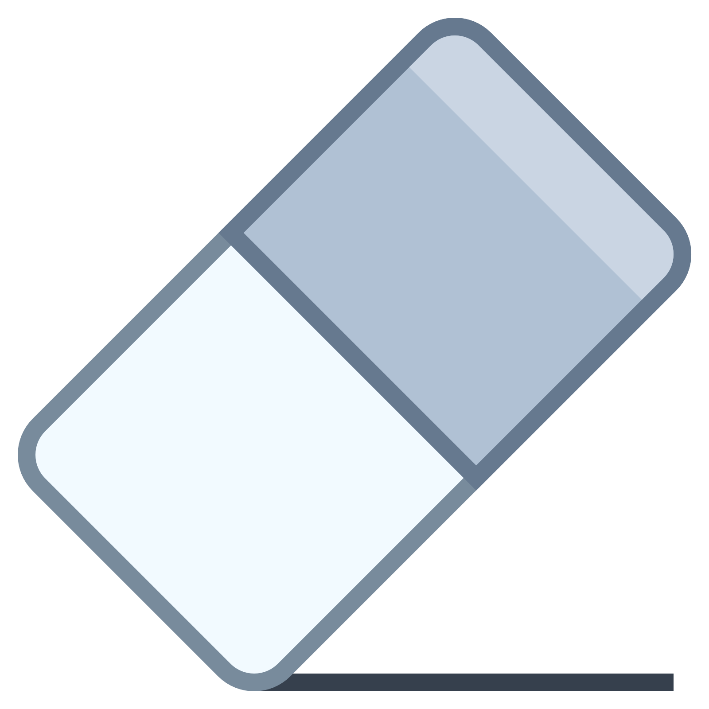

P
C
우 끼 프
Toggle navigation
4
You have 4 messages
Support Team
5 mins
Why not buy a new awesome theme?
See All Messages
10
You have 10 notifications
5 new members joined today
View all
9
You have 9 tasks
Design some buttons
20%
20% Complete
View all tasks
Guest
Guest - Web Developer
Member since Nov. 2012
Followers
Sales
Friends
Profile
Sign out

Youtube
Document
Image
drop file here
Option
Canvas
width :
height :
적용
닫기
Chat-Box
사용할 이름을 적으세요.
-